La sentencia try-with-resources de Java
 Novedades de Java 9
Novedades de Java 9try-with-resources es una forma concisa de gestión de recursos introducida en Java 7, adecuada para recursos que deben cerrarse automáticamente después de su uso (como archivos, conexiones de bases de datos, conexiones de red, etc.).
try-with-resources permite cerrar fácilmente los recursos utilizados en el bloque try-catch; el llamado recurso (resource) se refiere a los objetos que deben cerrarse cuando el programa finaliza.
La sentencia try-with-resources garantiza que cada recurso se cierre al finalizar la sentencia.
Todos los objetos que implementan la interfaz java.lang.AutoCloseable (que incluye todos los objetos que implementan java.io.Closeable) pueden utilizarse como recursos.
Ventajas:
- Simplificación del código: elimina el código de cierre manual de recursos, haciendo la lógica más clara.
- Menos errores: cierre automático de recursos, evita olvidar cerrarlos o manejar
finallylas excepciones que surgen en el bloque. - Mejor rendimiento: reduce las fugas de recursos y ahorra recursos del sistema.
Flujo de ejecución
La clave para entender try-with-resources es dominar el ciclo de vida de los recursos y cómo fluye el control cuando ocurre una excepción.

Sintaxis básica
La sintaxis de try-with-resources es la siguiente:
try (ResourceType resource = new ResourceType()) {
// 使用资源
} catch (ExceptionType e) {
// 处理异常
}
Los recursos declarados en el bloque try se cierran automáticamente cuando el código termina de ejecutarse, e incluso se cierran de forma segura si ocurre una excepción.
Gestión de múltiples recursos (cierre en orden inverso a la declaración):
try (Connection conn = DriverManager.getConnection(url);
Statement stmt = conn.createStatement();
ResultSet rs = stmt.executeQuery(sql)) {
while (rs.next()) {
System.out.println(rs.getString(1));
}
} catch (SQLException e) {
e.printStackTrace();
}
Orden de cierre:
rs → stmt → conn（声明顺序的逆序）
Orden de cierre:Los múltiples recursos se cierran en orden inverso al de declaración, es decir, el recurso declarado más tarde se cierra primero. Esto es coherente con la gestión tipo pila (LIFO) y garantiza que los recursos con dependencias se liberen correctamente.
Uso de la interfaz AutoCloseable
Cualquier clase personalizada que desee ser gestionada por try-with-resources solo necesita implementar la interfaz java.lang.AutoCloseable (o java.io.Closeable) y su método close().
Ejemplo
private final String url;
public DatabaseConnection(String url) {
this.url = url;
System.out.println("Conexión establecida: " + url);
}
public void query(String sql) {
System.out.println("Ejecutando consulta: " + sql);
}
@Override
public void close() {
System.out.println("Conexión cerrada: " + url);
// Liberar los recursos de conexión subyacentes...
}
}
// Uso
try (DatabaseConnection db = new DatabaseConnection("jdbc:mysql://localhost/mydb")) {
db.query("SELECT * FROM users");
} catch (Exception e) {
e.printStackTrace();
}
Salida:
连接已建立: jdbc:mysql://localhost/mydb 执行查询: SELECT * FROM users 连接已关闭: jdbc:mysql://localhost/mydb
Manejo de excepciones y excepciones suprimidas
Cuando la lógica de negocio en el bloque try y close() lanzan excepciones al mismo tiempo, try-with-resources adopta una estrategia especial: la excepción de negocio se propaga como excepción principal, y la excepción generada por close() se suprime (Suppressed) y se adjunta a la excepción principal; se puede obtener mediante getSuppressed().
Ejemplo
res.doSomething(); // Lanza Exception A (excepción de negocio)
} catch (Exception e) {
System.out.println("Excepción principal: " + e.getMessage());
for (Throwable s : e.getSuppressed()) { // Obtener Exception B
System.out.println("Excepción suprimida: " + s.getMessage());
}
}
Salida:
主异常: Exception in doSomething 抑制异常: Exception in close
Nota:En el try-finally tradicional, una excepción en el bloque finally puede sobrescribir la excepción de negocio, provocando la pérdida del error original. try-with-resources resuelve esta clásica trampa mediante el mecanismo de excepciones suprimidas.
Mejora en Java 9: reutilización de variables externas
Antes de Java 9, try-with-resources requería que los recursos se declararan nuevamente dentro de try().
Java 9 eliminó esta restricción: siempre que la variable sea effectively final (constante de facto), se puede referenciar directamente en try() sin necesidad de volver a declararla.
Java 7 / 8 — debe volver a declararse
try (BufferedReader br1 = br) { // ← Debe declarar una nueva variable br1
System.out.println(br1.readLine());
}
Java 9+ — reutilización directa
try (br) { // ← Usa br directamente, sin necesidad de redeclarar
System.out.println(br.readLine());
}
effectively final：Si la variable no se vuelve a asignar después de su inicialización, el compilador la trata automáticamente como final. No es necesario escribir explícitamente la palabra clave final.
Comparación con try-finally
| Dimensión | try-finally | try-with-resources |
|---|---|---|
| Cantidad de código | Mucho: requiere llamar a close() manualmente | Poco: cierre automático |
| Riesgo de omitir close | Alto: el descuido humano puede causar fugas de recursos | Cero: garantizado por el compilador |
| Anidamiento de múltiples recursos | Anidamiento profundo, mala legibilidad | Separados por punto y coma, estructura plana y clara |
| Manejo de excepciones | La excepción de finally sobrescribe la excepción de negocio | Mecanismo de excepciones suprimidas, la información se conserva por completo |
| Alcance de aplicación | Cualquier lógica de limpieza | Recursos que implementan AutoCloseable |
Enfoque try-finally (verboso y propenso a errores)
try {
br = new BufferedReader(new FileReader("data.txt"));
String line;
while ((line = br.readLine()) != null) System.out.println(line);
} catch (IOException e) {
e.printStackTrace();
} finally {
if (br != null) { // También hay que comprobar si es null
try { br.close(); } // close también puede lanzar una excepción
catch (IOException e) { e.printStackTrace(); }
}
}
Enfoque try-with-resources (conciso y seguro)
String line;
while ((line = br.readLine()) != null) System.out.println(line);
} catch (IOException e) {
e.printStackTrace();
}
Casos de uso comunes
| Categoría | Clases/interfaces habituales |
|---|---|
| 📁 E/S de archivos | FileInputStream、FileOutputStream、BufferedReader、BufferedWriter、FileChannel |
| 🗄 Base de datos | Connection、PreparedStatement、Statement、ResultSet、EntityManager |
| 🌐 Comunicación de red | Socket、ServerSocket、HttpURLConnection、InputStream、OutputStream |
Al manejar cualquier recurso que requiera cierre explícito, se debe preferir try-with-resources sobre try-finally. El compilador garantiza que los recursos se cierren, el código es más conciso y la información de excepciones es más completa; es la mejor práctica en la gestión de recursos de Java.
Otras extensiones
Haz clic para compartir mis notas
<p style="font-size:14px;">¡Las notas deben ser una extensión del contenido de este artículo!</p><br> <p style="font-size:12px;"><a href="../tougao.html" target="_blank">Envío de artículos, puedes hacer clic aquí</a></p> <p style="font-size:14px;"><a href="../w3cnote/runoob-user-test-intro.html" target="_blank">Cómo obtener el código de invitación de registro</a></p> <h3 class="text-muted"><i class="fa fa-info-circle" aria-hidden="true"></i> ¡Debes <a href=";.html" class="runoob-pop">iniciar sesión</a> antes de compartir notas!</h3> <p><a href="../w3cnote/runoob-user-test-intro.html" target="_blank">Cómo obtener el código de invitación de registro</a></p>